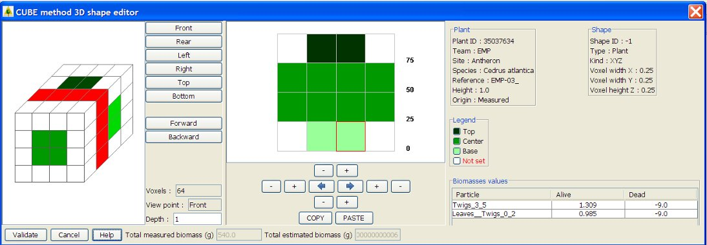

start => help_en => fireparadox
3D SHAPE EDITION (CUBE METHOD)
This interface aims at enter cubes (or voxels) repartition in a 3D shape.
Available types of cube are TOP/CENTER/BOTTOM.

LEGENDS
On top right, 2 panels display general informations about the plant (ID, team, site, species, height, origin) and the shape (ID, sample type, shape kind, voxel dimensions)
Bellow appears the color legend for each type of cubes (TOP/CENTER/BOTTOM)
INITIALISATION
If this shape is created from a sample, the cubes of the sample will be centered in the new 3D shape.
CUBE TYPE SELECTION
Select the type of cube to spead on the shape in the colored square in the legend (TOP/CENTER/BOTTOM). The selected type name appears in RED.
A white colored cubes represent “holes” in the crown.
A the bottom right part of the screen, particles list with biomasses for the selected type of cube is displayed. Biomasses values CAN NOT be modified here. Unit is grammes.
POSITION IN THE 3D SHAPE
In left part of the screen, the 3D shape is displayed in space.
Front/Rear/Left/Right/Top/Bottom aims at see the shape from different direction.
Forward/Backward aims at changing the cube slice point of view.
The selected cube slice appears in 2D in the grid in the central screen.
SHAPE MODIFICATION
To change a cube color (type), select the color on the legend and left clic on the cube. The cube appears in the right color with a red border.
If biomasses already exists for this cube, it appears in the bottom right part of the screen.
To change several cubes color at the same time, draw a rectangle with the right clic around the group of cubes.
A zoom tool is available by drawing a rectangle with the left clic of the mouse. A single right clic zoom forward.
 + and - increase and decrease the size if the grid in 4 dimensions.
+ and - increase and decrease the size if the grid in 4 dimensions.
Blue arrows copy cubes from left to right symetrically to Z axe.
Dans la partie centrale de l'écran, la grille des voxels du transect sélectionné à gauche est représentée.
Un clic gauche sur un voxel permet de positionner le type sélectionné dans la légende. Le voxel dans la grille apparait alors dans la couleur correspondante. Les biomasses de ce type seront alors affectés à ce voxel dans la base de données.
Il est possible d'affecter le même type à plusieurs voxels en même temps en dessinant un rectangle de sélection avec le clic droit de la souris.
Il est possible de zoomer en dessinant un rectangle de sélection avec le clic gauche de la souris. Un clic droit permet de revenir en arrière sur le zoom.
Les boutons + et - permettent d'agrandir ou de réduire la grille dans les 4 dimensions.
Les 2 flèches bleues permettent de copier tous les voxels à droite ou à gauche, symétriquement selon l'axe des Z
 Les boutons COPY/PASTE permettent de copier/coller tous les cubes d'une face 2D vers une autre.
Les boutons COPY/PASTE permettent de copier/coller tous les cubes d'une face 2D vers une autre.
BIOMASSES MODIFICATION
It is NOT POSSIBLE to modify biomasses values or to add a new particle from this interface, you have to go back to the SAMPLE edition in the same plant.
BIOMASSES CUMULATION
At the bottom of the screen, the total estimated biomass is automatically calculated.
Total measured biomass from the sampling, is displayed for control.
VALIDATION
Click on VALIDATE to save the new shape, or to save modifications in the database.
All empty voxel rows at the right or at the top of the shape will NOT be saved.
The shape size will be automatically ajusted.